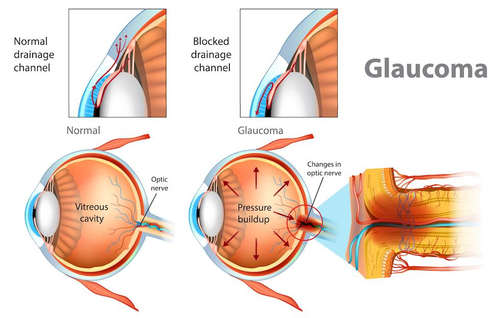
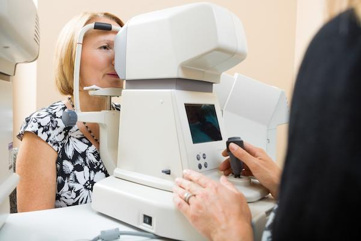

Glaucoma is an eye disease that can damage the nerve in the back of your eye. This nerve is called the optic nerve. It sends signals from your eye to your brain so you can see.
Glaucoma often happens when fluid builds up in the eye. This raises pressure inside the eye and can slowly cause vision loss.
A person may not notice the early vision changes. By the time they do, the disease may be advanced. That is why it is important to have regular eye exams. A complete eye exam can detect glaucoma early, and treatment can slow down or prevent more damage.

Usually, glaucoma happens when fluid pressure inside the eye gets too high. Less commonly, glaucoma can be caused by:
Eye injuries
Certain medicines
Other eye conditions
Family history
This is the most common type of glaucoma, making up about 90% of cases in the United States.
The eye constantly makes fluid. In a healthy eye, the fluid drains out through a small space in the eye called the drainage angle. If the fluid cannot drain properly, it builds up. Pressure rises inside the eye and slowly damages the optic nerve.
In this type, the drainage angle gets blocked completely. It is an emergency. If not treated, it can cause permanent vision loss within hours.
Symptoms may include severe eye pain, headache, nausea, blurred vision, and seeing halos around lights.
In this type, the optic nerve is damaged even though eye pressure is not high.
The exact cause is not known. It may be linked to poor blood flow to the optic nerve.
This type is due to another eye problem or disease, such as an eye injury, inflammation, diabetes, or certain medicines like steroids.
This rare type is present at birth or develops in early childhood. It happens when the drainage system does not develop correctly.
You may be at higher risk for glaucoma if you:
Are over age 60
Are Black, Hispanic, or Asian
Have family members with glaucoma
Have diabetes or high blood pressure
Use steroid medicines for a long time
Have had an eye injury or surgery
If glaucoma is not treated, it can cause:
Permanent vision loss
Tunnel vision
Blindness
Glaucoma damage cannot be reversed, but early treatment can help slow or stop the damage.
Glaucoma cannot be cured, but treatment helps protect your eyesight.
Treatment options include:
Eye drops: These help lower pressure in the eye.
Oral medicines: Sometimes, these are used with drops.
Laser therapy: This helps the fluid drain better.
Surgery: If necessary, surgery can create a new drainage route.
Get regular eye exams. Early signs of glaucoma often go unnoticed.
Take all eye medicines as prescribed.
Tell your care team if your vision changes.
Protect your eyes from injury.
Keep other health problems, like diabetes and high blood pressure, managed.

How often should I have eye exams?
How will I know if my vision is getting worse?
Contact your care team with any questions or concerns. We want you to feel confident in managing your health.
Call your care team if you:
Have gradual loss of side vision, or you notice blind spots in your vision
Have blurred or hazy vision that does not go away
Have frequent headaches, especially around your eyes
See halos or rainbow-colored rings around lights, especially at night
Have eye discomfort, pain, or redness that is new or does not improve
Have any questions or concerns about your vision or glaucoma medicines
Get help right away if you:
Have sudden, severe eye pain
Have a sudden loss of vision or a severe blurring of vision in one or both eyes
Have nausea or vomiting along with eye pain or vision changes
Have a red eye with extreme pain or sudden swelling
See halos or colored rings around lights with sudden vision loss or pain
Have a severe headache with eye pain and vision changes
Thank you for trusting us with your care. We are here to support you and want you to feel your best. Contact us with any questions.
IF YOU HAVE A MEDICAL EMERGENCY, CALL 911 OR GO TO THE EMERGENCY ROOM.
The information presented is intended for general information and educational purposes. It is not intended to replace the advice of your health care provider. Contact your health care provider if you believe you have a health problem.
Last updated May 2025
© 2025 Mytonomy, Inc. All rights reserved.